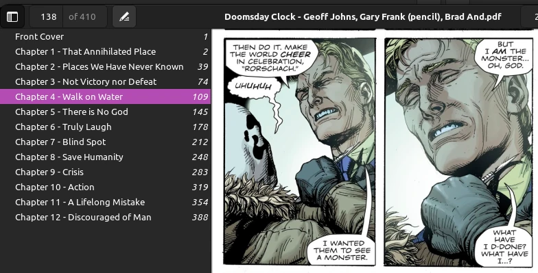

TIL: Constructing a PDF from .jpg image files
I have some folders of .jpg images that make up a comic. I want to convert them into a PDF to read on my tab and other devices, and import into by bookshelf in Calibre.
1. Install some prerequisites
sudo apt install imagemagick pdftk
2. Do the conversion
The versatile ImageMagick has a 'convert' command that seems to handle it:
convert *.jpg output.pdf
But this has some issues:
2.1. Failure due to security policy
'convert' currently refuses to generate PDFs: 'attempt to perform an operation not allowed by the security policy'. Apply the fix described on StackOverflow. :eyeroll:
2.2. Failure due to cache space
You might not need this fix if you generate smaller documents, or generate chapter-by-chapter as described below, but here it is in case.
Don't close that editor! In the same policy.xml you were just editing are resource size declarations for memory and disk. If 'convert' barfs with an error about running out of cache space, then bump up the disk resource size. I set mine to 8GB. StackOverflow again for details. :eyeroll: again.
3. Include a table of contents
I want to add bookmarks to the generated PDF marking each chapter.
Put the .jpgs into subdirectories by chapter, eg:
src/ |--chapter01/ | |--0001.jpg | |--0002.jpg | | ... |--chapter02/ | |--0001.jpg | |--0002.jpg | | ... | ...
Pad the chapter numbers with preceding zeros so that they sort into the correct order. I added an artificial 'chapter00' containing the front cover, separate from individual chapters.
Now we need to generate individual PDFs for each chapter. We can then use 'pdftk' to count the number of pages in each chapter, and use those counts to place bookmarks on the correct pages when pfdtk combines the chapters into one final output PDF.
I ended up regenerating each chapter a bunch while I tweaked the content, such as deleting adverts from the images. So I put these commands into a Makefile:
help: ## Show this help. @grep -E '^[^_][a-zA-Z_\/\.%-]+:.*?## .*$$' $(MAKEFILE_LIST) | awk 'BEGIN {FS = ":.*?## "}; {printf "\033[36m%-12s\033[0m %s\n", $$1, $$2}' .PHONY: help chapter_dirs=$(wildcard src/*) chapters=$(chapter_dirs:src/%=%) chapter_pdfs=$(chapters:%=%.pdf) bookmarks=bookmarks.txt output=output.pdf clean: ## Delete all generated PDFs rm -f $(chapter_pdfs) $(output) .PHONY: clean chapter%.pdf: src/chapter%/*.jpg ## Each individual chapter, use 2 digits convert src/chapter$*/*.jpg $@ $(bookmarks): $(chapter_pdfs) ./make-bookmarks >$(bookmarks) $(output): $(chapter_pdfs) $(bookmarks) pdftk $(chapter_pdfs) cat output - | \ pdftk - update_info "$(bookmarks)" output "$(output)" all: $(output) ## Build final output PDF .PHONY: all
Where 'make-bookmarks' is a bash script that generates the intermediate 'bookmarks.txt' file:
#!/usr/bin/env bash set -e # exit on error set -u # treat unset vars as errors # set -x # debugging output set -o pipefail # Generate a bookmarks file for all the matching PDF files fmt="BookmarkBegin BookmarkTitle: %s BookmarkLevel: 1 BookmarkPageNumber: %d " declare -a files=(chapter*.pdf) page=1 for file in "${files[@]}"; do title="${file%.*}" printf "$fmt" "$title" "$page" num_pages="$(pdftk "$file" dump_data | grep NumberOfPages | awk '{print $2}')" page=$((page + num_pages)) done
Now make all will produce the final output.pdf. You might want to open up the generated
bookmarks.txt and edit the placeholder "chapter01" names. Then run make all again to
regenerate the final output PDF with your fixed chapter names.
